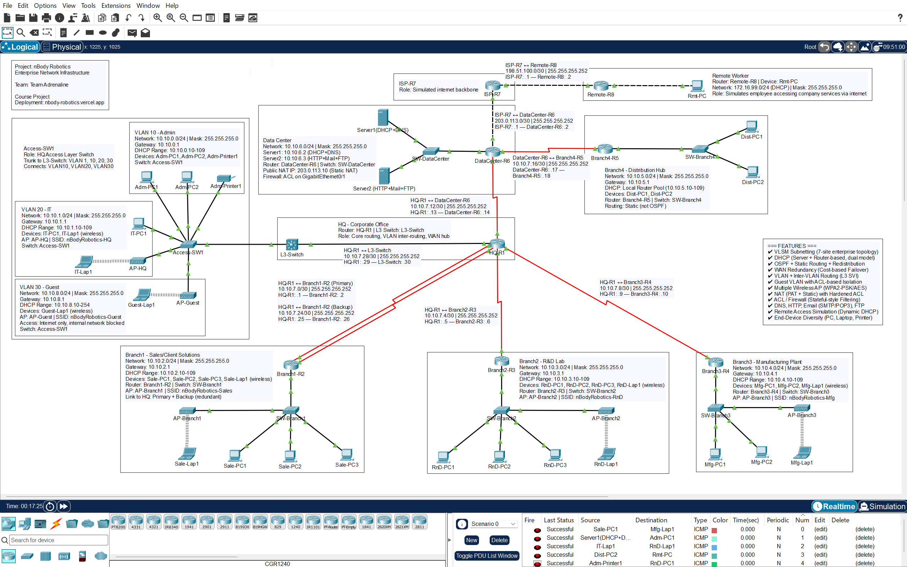

nBody Robotics — Enterprise Network Documentation
This document records the design and build of nBody Robotics' internal network — a seven-site enterprise topology covering Head Office, four branch operations, a central Data Center, and a simulated internet edge with a remote worker. Every subnet, cable run, and configuration line below reflects what was actually built and tested in Packet Tracer, including the routing, wireless, and NAT/ACL issues that came up mid-build and how each was diagnosed and resolved — with the exact commands used to prove it, not just the fix.
01Company Profile
Business context behind the design decisions — every VLAN, routing choice and DHCP method below traces back to something in this table.
nBody Robotics designs, builds, and deploys AI-driven autonomous robots and industrial machinery — spanning everything from algorithm design in the lab to physical assembly on the factory floor. The company doesn't treat software and hardware as separate disciplines handed off between teams; every product is engineered as one system from the first design sketch to the final shipped unit.
Headquartered in Dhaka, nBody Robotics operates across four specialized facilities: a Client Solutions office running sales and live product demonstrations, an AI-Robotics Design Lab for R&D and simulation, a Manufacturing Plant handling assembly and on-floor testing, and a Distribution Hub managing outbound logistics — all backed by a centralized Data Center running the company's core infrastructure and public-facing services.
What started as a single-office robotics workshop has scaled into a full manufacturing operation, and that growth is exactly what its original network couldn't keep up with. A flat network built for one office breaks down once client-facing sales traffic, confidential R&D work, and live production systems all have to run on the same wire without one outage taking down the others.
The clearest example is the production floor: an assembly line cannot depend on a live link to a remote server just to hand a workstation its IP address. So the Manufacturing and Distribution segments run their own local routing and DHCP, independent of the Data Center — the network is built the same way the company runs its operations: every part able to keep functioning on its own, without being cut off from the whole.
| Division | Function | Network role |
|---|---|---|
| Head Office | Corporate admin & IT governance | Core router + L3 switch, VLAN segmentation, WAN hub |
| Client Solutions (Branch 1) | Sales, live product demos | Wireless AP for staff moving around during demos |
| R&D Lab (Branch 2) | AI-robotics design & simulation | Standard branch LAN, largest PC count |
| Manufacturing Plant (Branch 3) | Assembly, on-floor testing | Standard branch LAN |
| Distribution Hub (Branch 4) | Logistics, outbound shipment tracking | Independent local DHCP + static routing (WAN-outage resilient) |
| Data Center | Core infrastructure | DHCP, DNS, HTTP, Mail, FTP; NAT and ACL boundary |
| Remote Worker | Off-site employee | Simulated internet client, static IP on a home-network subnet |
02Team & Instructor
| Name | ID |
|---|---|
| Atkia Galiba Rifah | 241-15-076 |
| Md. Shaid Hasan | 241-15-360 |
| Md. Fazle Rabbi | 241-15-364 |
| Md. Afsahul Arefin Talukder | 241-15-377 |
| Sormili Akter Nowshin | 241-15-404 |
| Instructor | Mr. Tanvirul Islam |
| Designation | Lecturer |
| Department | CSE |
| Faculty | Science and Information Technology |
03Architecture
Hub-and-spoke with two hubs: HQ for the office branches, Data Center for Distribution and the internet edge.
HQ-R1 is the primary hub for Branch1–3. Data Center-R6 acts as a secondary hub for Branch4 and carries all internet-facing traffic — this keeps user-office traffic and server-facing traffic on physically separate paths. Inter-VLAN routing at HQ is handled by a Layer 3 switch rather than the router itself, which avoids the single-trunk bottleneck of a router-on-a-stick setup once you're past two or three VLANs.
Why this shape and not a flat network
| Problem with a flat network | How this design avoids it |
|---|---|
| One compromised device exposes everything | Server Farm isolated in its own subnet behind an ACL |
| Broadcast domain grows unmanageable | VLAN10/20 at HQ, separate /24 per branch |
| Single point of failure on the only WAN link | Dual serial link HQ↔Branch1 (primary + backup) |
| Branch outage kills local operations too | Branch4 runs local DHCP independent of Data Center |
| Untrusted visitor devices reach internal servers | Dedicated Guest VLAN (30) with an extended ACL denying every internal subnet, permitting only outbound internet traffic |
| One office building, no wireless coverage per site | One access point per functional area (HQ, Branch1–3, Guest) — coverage matches where people actually move, not a single blanket AP |
Rule of thumb applied throughout: segmentation (VLAN or subnet) is added only where two groups of devices genuinely need different trust or reachability — HQ splits Admin/IT/Guest because they share one physical switch with different trust levels; each branch stays a single flat /24 because every device on that branch is the same function, same trust level, and segmentation there would add configuration surface with no real benefit.
04Complete Build Guide — Step by Step
The order this network was actually built in, and the order it has to be built in for each step to have something to attach to. Follow these phases in sequence to reproduce the full topology from an empty Packet Tracer canvas — each phase links to the section with the full configuration detail for that step.
Phase 1 — Plan the addressing before placing a single device
- Decide the base block (10.10.0.0/16) and split it: /24 for every LAN/VLAN, /30 for every router-to-router link. Work this out on paper first — see IP Addressing Plan for the complete allocation table used here.
- Reserve the external/documentation ranges (203.0.113.0/30, 198.51.100.0/30) for the ISP-facing links, and a separate private block (172.16.99.0/24) for the simulated remote-worker network — keeping it visually distinct from 10.10.x.x makes it obvious in any diagram which side of the internet a subnet sits on.
Phase 2 — Place devices and cable the topology
- Place all 8 routers, 7 switches, 5 APs, 2 servers, and end devices per the layout in Device Inventory.
- Cable hub-and-spoke first: HQ-R1 to Branch1–3 and to L3-Switch; DataCenter-R6 to Branch4-R5 and to ISP-R7; ISP-R7 to Remote-R8 to Rmt-PC. Full port-by-port list in Port-to-Port Cabling.
- Cable each branch's internal LAN — router to switch, switch to end devices and to that site's AP.
- For serial links, one side must run clock rate 64000 (the DCE end) or the link stays administratively down regardless of correct IP addressing — check which end is DCE in Packet Tracer before assuming a link failure is an addressing problem.
Phase 3 — Bring up basic IP connectivity and OSPF
- On every router, assign the planned IP/mask to each interface and no shutdown it. Nothing else works until interfaces are up — verify each one with show ip interface brief before moving on.
- Enable OSPF process 1 on HQ-R1, Branch1-R2, Branch2-R3, Branch3-R4, DataCenter-R6, and L3-Switch, advertising every directly connected 10.10.x.x network into Area 0. Full per-device OSPF blocks are in Router Configurations.
- Confirm adjacency before doing anything else: show ip ospf neighbor should show FULL on every expected link. A missing neighbor here means nothing built afterward (VLANs, NAT, ACLs) will be reachable from other sites, so this is the first checkpoint worth stopping at.
- Configure Branch4-R5 with a static default route toward DataCenter-R6 instead of OSPF (deliberate design choice — see Architecture), then on DataCenter-R6 add redistribute static subnets so the rest of OSPF learns Branch4's subnet. The subnets keyword is not optional — without it, VLSM-sized routes are silently excluded.
Phase 4 — VLANs, inter-VLAN routing, and DHCP
- On L3-Switch: ip routing, create VLAN 10/20/30, assign each an SVI with its planned IP, and trunk the link to Access-SW1.
- On Access-SW1: create the same three VLANs, set every end-device and AP-facing port to switchport mode access with the correct switchport access vlan — a port left on the default VLAN 1 will never reach its gateway (see Troubleshooting #5).
- Configure Server1 with DHCP pools for every helper-address subnet (HQ VLAN10/20, Branch1–3), and ip helper-address 10.10.6.2 on each of those gateway SVIs/interfaces.
- Configure Branch4-R5 and L3-Switch (VLAN 30) each with their own local DHCP pool instead of pointing at Server1 — full reasoning for both independent pools in Company Profile and Switch, VLAN & Wireless.
- Test every subnet's DHCP before moving on: switch one PC per site from static to DHCP and confirm it lands in the correct range. Full expected outputs in Testing Methodology.
Phase 5 — Wireless access points
- Wire each AP into an access port already assigned to the correct VLAN (Branch1–3 use their site's single flat VLAN; AP-HQ uses VLAN 20; AP-Guest uses VLAN 30).
- Configure SSID, WPA2-PSK passphrase (minimum 8 ASCII characters), AES encryption, and a non-overlapping channel (1/6/11) on each AP — full table in Switch, VLAN & Wireless.
- Swap each wireless client's wired NIC for a wireless module in Physical view, then power the PC back on and join it to its site's SSID.
Phase 6 — Guest VLAN isolation
- Confirm VLAN 30 and its SVI (Phase 4) and AP-Guest (Phase 5) are already in place.
- Write the extended ACL denying Guest → internal, permitting everything else, and apply it inbound on the VLAN 30 SVI. Every rule is listed in Complete ACL Reference.
- Test both directions before considering this phase done — a Guest device should fail to reach any 10.10.x.x host and succeed reaching anything outside that range. Skipping the "still works outward" half of this test is how a too-broad deny rule goes unnoticed.
Phase 7 — NAT and the internet edge
- On DataCenter-R6, mark inside interfaces ip nat inside and the ISP-facing interface ip nat outside.
- Configure PAT (overload) for the whole internal range and a static one-to-one mapping for Server2's public-facing IP.
- Build ISP-R7 and Remote-R8 with their own IP addressing (Remote-R8 running a local DHCP pool — Phase 4 pattern, not static), and confirm return-path routing exists on ISP-R7 back toward both 10.10.0.0/16 (via DataCenter-R6) and 172.16.99.0/24 (via Remote-R8) — a missing return route here produces a connection that looks like it's working one-way and isn't (see Troubleshooting #3).
Phase 8 — The inbound ACL (build this after NAT works, not before)
- Write the extended ACL restricting inbound traffic to Server2's public IP only, and apply it on the same router that performs NAT translation — not a separate edge router. Applying it elsewhere breaks return-path matching in the simulator (Troubleshooting #4).
- Test outbound-initiated traffic (a ping or browse session from inside) after the ACL is applied, not just inbound access to Server2 — the router's own return traffic is a separate case the first four lines of this ACL don't cover (Troubleshooting #7). Add the echo-reply / established permit lines from Complete ACL Reference once this gap shows up.
Phase 9 — Application services
- Enable DHCP, DNS, HTTP, SMTP/POP3, and FTP on the two Data Center servers.
- Point DNS A-records at Server2's IP, then verify HTTP/mail/FTP by domain name (not raw IP) so DNS resolution is proven as part of the same test, not assumed separately.
Phase 10 — WAN redundancy and final verification
- Add the second HQ↔Branch1 serial link with a deliberately higher OSPF cost, confirm the primary is preferred under normal conditions, then shut the primary and confirm automatic failover.
- Work through the full checklist in Testing Methodology end to end — every feature, both from its own site and from at least one other site, before considering the build complete.
05Topology Diagram
+-----------+ +------------+ +--------+
| ISP-R7 |----------| Remote-R8 |-------| Rmt-PC |
+-----+-----+ +------------+ +--------+
| 203.0.113.0/30 198.51.100.0/30
| NAT (PAT+Static) + ACL
+------+---------+
| DataCenter-R6 |----Static routing---+
| Server1 .6.2 | |
| Server2 .6.3 | +------+------+
| NAT pub .10 | | Branch4-R5 |
+------+---------+ | Dist. Hub |
| | local DHCP |
+------+---------+ +-------------+
| HQ-R1 |
| L3-Switch |
| VLAN10 / VLAN20|
+--+------+----+-+
________/ | \________
/ | \
+-------+-----+ +------+------+ +----+--------+
| Branch1-R2 | | Branch2-R3 | | Branch3-R4 |
| Sales + AP | | R&D Lab | | Mfg. Plant |
| dual link | +-------------+ +-------------+
+-------------+
Rendered as ASCII for portability. The annotated version with per-site IP/DHCP labels lives in the .pkt file canvas as in-place text notes — the actual canvas is captured below.
Live canvas capture
Full topology as built in Packet Tracer, including the in-canvas notes for every site, VLAN, and WAN link, plus the feature checklist box (top-left). Click to view full size.

Click to expand06IP Addressing Plan (VLSM)
Base block 10.10.0.0/16. LAN subnets sized /24 for growth headroom; point-to-point WAN links sized /30 for an exact fit — the actual demonstration of VLSM, since a flat /24 everywhere would waste 252 addresses on every two-router link.
LAN subnets
| Site / VLAN | Network | Mask | Gateway | Usable range | DHCP pool | Method |
|---|---|---|---|---|---|---|
| HQ – VLAN 10 (Admin) | 10.10.0.0/24 | 255.255.255.0 | 10.10.0.1 | .2–.254 | .10–.109 | helper-address |
| HQ – VLAN 20 (IT) | 10.10.1.0/24 | 255.255.255.0 | 10.10.1.1 | .2–.254 | .10–.109 | helper-address |
| Branch1 – Sales | 10.10.2.0/24 | 255.255.255.0 | 10.10.2.1 | .2–.254 | .10–.109 | helper-address |
| Branch2 – R&D | 10.10.3.0/24 | 255.255.255.0 | 10.10.3.1 | .2–.254 | .10–.109 | helper-address |
| Branch3 – Manufacturing | 10.10.4.0/24 | 255.255.255.0 | 10.10.4.1 | .2–.254 | .10–.109 | helper-address |
| Branch4 – Distribution | 10.10.5.0/24 | 255.255.255.0 | 10.10.5.1 | .2–.254 | .10–.109 | local pool |
| Data Center | 10.10.6.0/24 | 255.255.255.0 | 10.10.6.1 | .2–.254 | — | static only |
| HQ – VLAN 30 (Guest) | 10.10.8.0/24 | 255.255.255.0 | 10.10.8.1 | .2–.254 | .10–.254 | local pool (L3-Switch) |
WAN / transit links (/30)
| Link | Network | Mask | Endpoint A | Endpoint B | Routing |
|---|---|---|---|---|---|
| HQ ↔ Branch1 (primary) | 10.10.7.0/30 | 255.255.255.252 | HQ-R1 .1 | Branch1-R2 .2 | OSPF cost 64 |
| HQ ↔ Branch1 (backup) | 10.10.7.24/30 | 255.255.255.252 | HQ-R1 .25 | Branch1-R2 .26 | OSPF cost 100 |
| HQ ↔ Branch2 | 10.10.7.4/30 | 255.255.255.252 | HQ-R1 .5 | Branch2-R3 .6 | OSPF |
| HQ ↔ Branch3 | 10.10.7.8/30 | 255.255.255.252 | HQ-R1 .9 | Branch3-R4 .10 | OSPF |
| HQ ↔ Data Center | 10.10.7.12/30 | 255.255.255.252 | HQ-R1 .13 | DataCenter-R6 .14 | OSPF |
| Data Center ↔ Branch4 | 10.10.7.16/30 | 255.255.255.252 | DataCenter-R6 .17 | Branch4-R5 .18 | Static + redistribute |
| HQ ↔ L3-Switch (transit) | 10.10.7.28/30 | 255.255.255.252 | HQ-R1 .29 | L3-Switch .30 | OSPF |
Every point-to-point link uses /30 — exactly 2 usable addresses, 0 wasted. Sizing any of these as a /24 (254 usable) would burn 252 addresses per link for no reason; across 7 WAN links that's over 1,760 wasted addresses avoided by VLSM.
External / ISP zone
| Segment | Network | Mask | Endpoint A | Endpoint B | Note |
|---|---|---|---|---|---|
| ISP ↔ Data Center | 203.0.113.0/30 | 255.255.255.252 | ISP-R7 .1 | DataCenter-R6 .2 | RFC 5737 documentation range |
| ISP ↔ Remote Worker | 198.51.100.0/30 | 255.255.255.252 | ISP-R7 .1 | Remote-R8 .2 | RFC 5737 documentation range |
| Remote Worker LAN | 172.16.99.0/24 | 255.255.255.0 | Remote-R8 .1 (gateway) | Rmt-PC (DHCP) | Remote-R8 runs a local DHCP pool, simulating a home/hotel router — Rmt-PC is a DHCP client, not a static host (see note below) |
| Static NAT public IP | 203.0.113.10 | /32 | Maps to Server2 (10.10.6.3) | ||
07Device Inventory
Devices by type
End hosts per site
Router model usage
Full device list
| Device | Model | Site | Role |
|---|---|---|---|
| HQ-R1 | Cisco 2911 | HQ | Core router, WAN hub (6 interfaces: 1 Gig, 5 Serial via 3× HWIC-2T) |
| L3-Switch | Cisco 3560-24PS | HQ | Inter-VLAN routing (VLAN10/20 SVIs) |
| Access-SW1 | Cisco 2960-24TT | HQ | Access layer, trunk to L3-Switch |
| Branch1-R2 | Cisco 2911 | Branch1 | Dual-homed to HQ (primary + backup serial) |
| SW-Branch1 | Cisco 2960-24TT | Branch1 | LAN switch + AP uplink |
| AP-Branch1 | Cisco AP-PT | Branch1 | WPA2-PSK wireless, SSID nBodyRobotics-Sales |
| Branch2-R3 | Cisco 2911 | Branch2 | Standard branch router (1 HWIC-2T) |
| SW-Branch2 | Cisco 2960-24TT | Branch2 | LAN switch + AP uplink |
| AP-Branch2 | Cisco AP-PT | Branch2 | WPA2-PSK wireless, SSID nBodyRobotics-RnD |
| Branch3-R4 | Cisco 2911 | Branch3 | Standard branch router (1 HWIC-2T) |
| SW-Branch3 | Cisco 2960-24TT | Branch3 | LAN switch + AP uplink |
| AP-Branch3 | Cisco AP-PT | Branch3 | WPA2-PSK wireless, SSID nBodyRobotics-Mfg |
| Branch4-R5 | Cisco 2911 | Branch4 | Static routing, local DHCP pool (1 HWIC-2T) |
| SW-Branch4 | Cisco 2960-24TT | Branch4 | LAN switch |
| DataCenter-R6 | Cisco 2911 | Data Center | NAT, ACL, OSPF redistribution (1 HWIC-2T) |
| SW-DataCenter | Cisco 2960-24TT | Data Center | Server LAN switch |
| Server1 | Generic Server | Data Center | DHCP + DNS — 10.10.6.2 |
| Server2 | Generic Server | Data Center | HTTP + Mail + FTP — 10.10.6.3 |
| AP-HQ | Cisco AP-PT | HQ (VLAN 20) | WPA2-PSK wireless, SSID nBodyRobotics-HQ |
| AP-Guest | Cisco AP-PT | HQ (VLAN 30) | WPA2-PSK wireless, SSID nBodyRobotics-Guest, isolated |
| ISP-R7 | Cisco 2911 | Edge | Simulated internet backbone, no routing protocol |
| Remote-R8 | Cisco 2911 | Remote | Simulated home/hotel gateway |
End-user devices
| Site | Devices | Assignment |
|---|---|---|
| HQ VLAN10 (Admin) | Adm-PC1, Adm-PC2, Adm-Printer1 | DHCP via Server1 |
| HQ VLAN20 (IT) | IT-PC1, IT-Lap1 (wireless, AP-HQ) | DHCP via Server1 / AP-HQ |
| HQ VLAN30 (Guest) | Guest-Lap1 (wireless, AP-Guest) | DHCP via L3-Switch local pool — internet only |
| Branch1 (Sales) | Sale-PC1, Sale-PC2, Sale-PC3, Sale-Lap1 (wireless, AP-Branch1) | DHCP via Server1 / AP |
| Branch2 (R&D) | RnD-PC1, RnD-PC2, RnD-PC3, RnD-Lap1 (wireless, AP-Branch2) | DHCP via Server1 / AP |
| Branch3 (Manufacturing) | Mfg-PC1, Mfg-PC2, Mfg-Lap1 (wireless, AP-Branch3) | DHCP via Server1 / AP |
| Branch4 (Distribution) | Dist-PC1, Dist-PC2 | DHCP via Branch4-R5 local pool |
| Remote | Rmt-PC | DHCP via Remote-R8 local pool (172.16.99.0/24) — simulates a home/hotel network, not a company-managed subnet |
One wireless client was added per functional area rather than leaving wireless coverage at Branch1 only — Branch2/Branch3 each replaced one wired seat with a mobile device (floor supervisor/lab laptop use case) instead of growing the device count, keeping the topology's original scale intact.
08Port-to-Port Cabling
Every physical connection in the topology, in the order they were built: HQ core first, then WAN links out to each branch, then each branch's local LAN.
WAN links (Serial DCE — clock rate set on the DCE end)
| # | Device A | Port A | Device B | Port B | DCE side |
|---|---|---|---|---|---|
| 1 | HQ-R1 | Se0/0/0 | Branch1-R2 | Se0/0/0 | HQ-R1 |
| 2 | HQ-R1 | Se0/0/1 | Branch1-R2 | Se0/0/1 | HQ-R1 |
| 3 | HQ-R1 | Se0/1/0 | Branch2-R3 | Se0/0/0 | HQ-R1 |
| 4 | HQ-R1 | Se0/1/1 | Branch3-R4 | Se0/0/0 | HQ-R1 |
| 5 | HQ-R1 | Se0/2/0 | DataCenter-R6 | Se0/0/0 | HQ-R1 |
| 6 | DataCenter-R6 | Se0/0/1 | Branch4-R5 | Se0/0/0 | DataCenter-R6 |
LAN / trunk / uplink runs (Copper Straight-Through unless noted)
| # | Device A | Port A | Device B | Port B | Notes |
|---|---|---|---|---|---|
| 7 | HQ-R1 | Gi0/0 | L3-Switch | Gi0/1 | Routed transit link |
| 8 | L3-Switch | Gi0/2 | Access-SW1 | Gi1/1 | 802.1Q trunk |
| 9 | Access-SW1 | Fa0/1 | Adm-PC1 | Fa0 | VLAN 10 |
| 10 | Access-SW1 | Fa0/2 | Adm-PC2 | Fa0 | VLAN 10 |
| 11 | Access-SW1 | Fa0/3 | IT-PC1 | Fa0 | VLAN 20 |
| 12 | Branch1-R2 | Gi0/0 | SW-Branch1 | Gi1/1 | — |
| 13 | SW-Branch1 | Fa0/1 | Sale-PC1 | Fa0 | — |
| 14 | SW-Branch1 | Fa0/2 | Sale-PC2 | Fa0 | — |
| 15 | SW-Branch1 | Fa0/3 | Sale-PC3 | Fa0 | — |
| 16 | SW-Branch1 | Fa0/4 | AP-Branch1 | Port0 | — |
| 17 | Sale-Lap1 | Wireless0 | AP-Branch1 | radio | WPA2-PSK, no cable |
| 18 | Branch2-R3 | Gi0/0 | SW-Branch2 | Gi1/1 | — |
| 19–22 | SW-Branch2 | Fa0/1–0/4 | RnD-PC1–4 | Fa0 | — |
| 23 | Branch3-R4 | Gi0/0 | SW-Branch3 | Gi1/1 | — |
| 24–26 | SW-Branch3 | Fa0/1–0/3 | Mfg-PC1–3 | Fa0 | — |
| 27 | Branch4-R5 | Gi0/0 | SW-Branch4 | Gi1/1 | — |
| 28–29 | SW-Branch4 | Fa0/1–0/2 | Dist-PC1–2 | Fa0 | — |
| 30 | DataCenter-R6 | Gi0/0 | SW-DataCenter | Gi1/1 | — |
| 31 | SW-DataCenter | Fa0/1 | Server1 | Fa0 | DHCP+DNS |
| 32 | SW-DataCenter | Fa0/2 | Server2 | Fa0 | HTTP+Mail+FTP |
| 33 | DataCenter-R6 | Gi0/1 | ISP-R7 | Gi0/0 | NAT outside boundary |
| 34 | ISP-R7 | Gi0/1 | Remote-R8 | Gi0/0 | Auto-negotiated (cross-over) |
| 35 | Remote-R8 | Gi0/1 | Rmt-PC | Fa0 | — |
09Router Configurations
Full running-config excerpts for every router, as applied and verified. Click a router to expand.
HQ-R1 Core
hostname HQ-R1 ! interface GigabitEthernet0/0 ip address 10.10.7.29 255.255.255.252 description Link-to-L3-Switch-Transit no shutdown ! interface Serial0/0/0 ip address 10.10.7.1 255.255.255.252 clock rate 64000 description Link-to-Branch1-Primary no shutdown ! interface Serial0/0/1 ip address 10.10.7.25 255.255.255.252 clock rate 64000 ip ospf cost 100 description Link-to-Branch1-Backup no shutdown ! interface Serial0/1/0 ip address 10.10.7.5 255.255.255.252 clock rate 64000 description Link-to-Branch2 no shutdown ! interface Serial0/1/1 ip address 10.10.7.9 255.255.255.252 clock rate 64000 description Link-to-Branch3 no shutdown ! interface Serial0/2/0 ip address 10.10.7.13 255.255.255.252 clock rate 64000 description Link-to-DataCenter no shutdown ! router ospf 1 network 10.10.7.0 0.0.0.3 area 0 network 10.10.7.4 0.0.0.3 area 0 network 10.10.7.8 0.0.0.3 area 0 network 10.10.7.12 0.0.0.3 area 0 network 10.10.7.24 0.0.0.3 area 0 network 10.10.7.28 0.0.0.3 area 0
Branch1-R2 Sales — dual-homed
hostname Branch1-R2 ! interface GigabitEthernet0/0 ip address 10.10.2.1 255.255.255.0 description Link-to-SW-Branch1 ip helper-address 10.10.6.2 no shutdown ! interface Serial0/0/0 ip address 10.10.7.2 255.255.255.252 description Link-to-HQ-Primary no shutdown ! interface Serial0/0/1 ip address 10.10.7.26 255.255.255.252 ip ospf cost 100 description Link-to-HQ-Backup no shutdown ! router ospf 1 network 10.10.2.0 0.0.0.255 area 0 network 10.10.7.0 0.0.0.3 area 0 network 10.10.7.24 0.0.0.3 area 0
Branch2-R3 R&D
hostname Branch2-R3 ! interface GigabitEthernet0/0 ip address 10.10.3.1 255.255.255.0 description Link-to-SW-Branch2 ip helper-address 10.10.6.2 no shutdown ! interface Serial0/0/0 ip address 10.10.7.6 255.255.255.252 description Link-to-HQ no shutdown ! router ospf 1 network 10.10.3.0 0.0.0.255 area 0 network 10.10.7.4 0.0.0.3 area 0
Branch3-R4 Manufacturing
hostname Branch3-R4 ! interface GigabitEthernet0/0 ip address 10.10.4.1 255.255.255.0 description Link-to-SW-Branch3 ip helper-address 10.10.6.2 no shutdown ! interface Serial0/0/0 ip address 10.10.7.10 255.255.255.252 description Link-to-HQ no shutdown ! router ospf 1 network 10.10.4.0 0.0.0.255 area 0 network 10.10.7.8 0.0.0.3 area 0
Branch4-R5 Distribution — static routing, no OSPF
hostname Branch4-R5 ! interface GigabitEthernet0/0 ip address 10.10.5.1 255.255.255.0 description Link-to-SW-Branch4 no shutdown ! interface Serial0/0/0 ip address 10.10.7.18 255.255.255.252 description Link-to-DataCenter no shutdown ! ip dhcp excluded-address 10.10.5.1 10.10.5.9 ! ip dhcp pool Branch4-LocalPool network 10.10.5.0 255.255.255.0 default-router 10.10.5.1 dns-server 10.10.6.2 ! ip route 0.0.0.0 0.0.0.0 10.10.7.17
DataCenter-R6 NAT + ACL + redistribution
hostname DataCenter-R6 ! interface GigabitEthernet0/0 ip address 10.10.6.1 255.255.255.0 description Link-to-SW-DataCenter ip nat inside no shutdown ! interface GigabitEthernet0/1 ip address 203.0.113.2 255.255.255.252 description Link-to-ISP ip nat outside ip access-group INBOUND-FILTER in no shutdown ! interface Serial0/0/0 ip address 10.10.7.14 255.255.255.252 description Link-to-HQ ip nat inside no shutdown ! interface Serial0/0/1 ip address 10.10.7.17 255.255.255.252 clock rate 64000 description Link-to-Branch4 ip nat inside no shutdown ! ip route 0.0.0.0 0.0.0.0 203.0.113.1 ip route 10.10.5.0 255.255.255.0 10.10.7.18 ! access-list 1 permit 10.10.0.0 0.0.255.255 ip nat inside source list 1 interface GigabitEthernet0/1 overload ip nat inside source static 10.10.6.3 203.0.113.10 ! ip access-list extended INBOUND-FILTER 10 permit tcp any host 203.0.113.10 20 permit udp any host 203.0.113.10 30 permit icmp any host 203.0.113.10 35 permit icmp any host 203.0.113.2 echo-reply 36 permit tcp any host 203.0.113.2 established 40 deny ip any any ! router ospf 1 network 10.10.6.0 0.0.0.255 area 0 network 10.10.7.12 0.0.0.3 area 0 network 10.10.7.16 0.0.0.3 area 0 redistribute static subnets default-information originate
ISP-R7 Edge / simulated internet
hostname ISP-R7 ! interface GigabitEthernet0/0 ip address 203.0.113.1 255.255.255.252 description Link-to-DataCenter no shutdown ! interface GigabitEthernet0/1 ip address 198.51.100.1 255.255.255.252 description Link-to-RemoteWorker no shutdown ! ip route 203.0.113.10 255.255.255.255 203.0.113.2 ip route 172.16.99.0 255.255.255.0 198.51.100.2
Remote-R8 Remote worker gateway — home router simulation
hostname Remote-R8 ! interface GigabitEthernet0/0 ip address 198.51.100.2 255.255.255.252 description Link-to-ISP no shutdown ! interface GigabitEthernet0/1 ip address 172.16.99.1 255.255.255.0 description Link-to-RemotePC no shutdown ! ip dhcp excluded-address 172.16.99.1 ! ip dhcp pool HOME-POOL network 172.16.99.0 255.255.255.0 default-router 172.16.99.1 dns-server 10.10.6.2 ! ip route 0.0.0.0 0.0.0.0 198.51.100.1
10Switch, VLAN & Wireless Configuration
Three VLANs at HQ (Admin, IT, Guest) routed at Layer 3 by L3-Switch, plus five wireless access points — one per functional area rather than a single blanket AP for the whole building.
Why L3 switching instead of router-on-a-stick
Inter-VLAN routing runs on L3-Switch's own SVIs (interface Vlan10, Vlan20, Vlan30) rather than a single trunk back to a router subinterface. With three VLANs and growing, a router-on-a-stick setup forces every inter-VLAN packet through one physical link twice (switch→router, router→switch) — that link becomes the bottleneck. SVIs route at backplane speed inside the switch itself, with no such choke point.
L3-Switch Inter-VLAN routing + Guest ACL
hostname L3-Switch ip routing ! vlan 10 name Admin vlan 20 name IT vlan 30 name Guest ! interface Vlan10 ip address 10.10.0.1 255.255.255.0 ip helper-address 10.10.6.2 no shutdown ! interface Vlan20 ip address 10.10.1.1 255.255.255.0 ip helper-address 10.10.6.2 no shutdown ! interface Vlan30 ip address 10.10.8.1 255.255.255.0 ip access-group 130 in no shutdown ! interface GigabitEthernet0/1 no switchport ip address 10.10.7.30 255.255.255.252 no shutdown ! interface GigabitEthernet0/2 switchport trunk encapsulation dot1q switchport mode trunk switchport trunk allowed vlan add 30 no shutdown ! ip dhcp excluded-address 10.10.8.1 10.10.8.9 ! ip dhcp pool GUEST-POOL network 10.10.8.0 255.255.255.0 default-router 10.10.8.1 dns-server 8.8.8.8 ! access-list 130 deny ip 10.10.8.0 0.0.0.255 10.10.0.0 0.0.255.255 access-list 130 permit ip any any ! router ospf 1 network 10.10.0.0 0.0.0.255 area 0 network 10.10.1.0 0.0.0.255 area 0 network 10.10.8.0 0.0.0.255 area 0 network 10.10.7.28 0.0.0.3 area 0
Access-SW1 HQ access layer, 3 VLANs + AP uplinks
hostname Access-SW1 ! vlan 10 name Admin vlan 20 name IT vlan 30 name Guest ! interface GigabitEthernet1/1 switchport mode trunk switchport trunk allowed vlan add 30 no shutdown ! interface FastEthernet0/1 switchport mode access switchport access vlan 10 interface FastEthernet0/2 switchport mode access switchport access vlan 10 interface FastEthernet0/3 switchport mode access switchport access vlan 20 interface FastEthernet0/4 switchport mode access switchport access vlan 20 description Uplink to AP-HQ interface FastEthernet0/5 switchport mode access switchport access vlan 30 description Uplink to AP-Guest interface FastEthernet0/6 switchport mode access switchport access vlan 10 description Uplink to Adm-Printer1
Wireless access points
One AP per functional area — HQ (IT devices), Guest, and each of Branch1–3 — rather than leaving wireless coverage at a single site. Each SSID carries the company name and site so a user picking a network from a phone's WiFi list can immediately tell which one is theirs.
| AP | Site / VLAN | Uplink port | SSID | Passphrase | Channel | Auth / Encryption |
|---|---|---|---|---|---|---|
| AP-Branch1 | Branch1 (10.10.2.0/24) | SW-Branch1 Fa0/1 | nBodyRobotics-Sales | sales@2026 | 6 | WPA2-PSK / AES |
| AP-HQ | HQ VLAN 20 – IT (10.10.1.0/24) | Access-SW1 Fa0/4 | nBodyRobotics-HQ | admin@2026 | 1 | WPA2-PSK / AES |
| AP-Branch2 | Branch2 (10.10.3.0/24) | SW-Branch2 Fa0/5 | nBodyRobotics-RnD | rnd@2026 | 11 | WPA2-PSK / AES |
| AP-Branch3 | Branch3 (10.10.4.0/24) | SW-Branch3 Fa0/5 | nBodyRobotics-Mfg | mfg@2026 | 6 | WPA2-PSK / AES |
| AP-Guest | HQ VLAN 30 – Guest (10.10.8.0/24) | Access-SW1 Fa0/5 | nBodyRobotics-Guest | guest@2026 | 11 | WPA2-PSK / AES |
Channels 1, 6, and 11 are the only three non-overlapping channels in the 2.4 GHz band — neighbouring APs alternate between them to avoid co-channel interference. All five passphrases follow one {role}@2026 convention (9 characters, clears the WPA2 8–63 ASCII minimum).
Wireless AP is single-VLAN — why five physical APs, not one
The AP-PT model in Packet Tracer serves exactly one SSID mapped to exactly one VLAN — it can't broadcast multiple SSIDs on different VLANs the way a real enterprise AP or WLC-managed AP can. Wiring AP-HQ and AP-Guest into different access ports on Access-SW1 (VLAN 20 vs VLAN 30) is the workaround: two physical radios standing in for what a single multi-SSID AP would normally do.
Test — wireless client join and IP assignment
DHCP request successful. IPv4 Address .... <correct subnet for that AP> Subnet Mask ..... 255.255.255.0 Default Gateway . <site gateway> DNS Server ...... 10.10.6.2 (8.8.8.8 for Guest-Lap1 only)
Rule to verify by: every wireless client should land in the exact same subnet as the wired PCs on that same site — wireless is a different access medium, not a different network.
Test — Guest VLAN isolation (both directions)
| From Guest-Lap1 | Expected result | Why |
|---|---|---|
| ping 10.10.0.10 | Destination host unreachable | ACL 130 denies Guest → any 10.10.0.0/16 address |
| ping 10.10.6.2 | Destination host unreachable | Internal DNS/DHCP server, still inside the denied range |
| ping 198.51.100.2 | Reply received | Outside 10.10.0.0/16 — falls through to the permit rule |
11Routing Design
| Component | Detail |
|---|---|
| Dynamic routing | OSPF process 1, single area 0 — HQ, Branch1–3, Data Center, L3-Switch |
| Static routing | Branch4 uses a default static route to Data Center instead of OSPF |
| Redistribution | redistribute static subnets on Data Center makes Branch4's subnet visible to the rest of OSPF |
| WAN redundancy | HQ↔Branch1 dual serial link, primary cost 64 / backup cost 100 |
| Default route origination | default-information originate on Data Center gives every internal router a path to the internet |
Redundancy verification
O 10.10.0.0/24 [110/66] via 10.10.7.1, 02:08:15, Serial0/0/0 O 10.10.6.0/24 [110/129] via 10.10.7.1, 02:27:41, Serial0/0/0
Primary link (Se0/0/0, cost 64) carries traffic under normal conditions. Shutting it down forces automatic reconvergence onto the backup path (Se0/0/1, cost 100) within seconds, confirmed by re-running the same command.
12Network Services
Server1 (10.10.6.2) runs five pools — one per HQ VLAN and per office branch — reached across subnet boundaries via ip helper-address on each gateway interface. Branch4 is deliberately excluded from this and runs its own local pool on Branch4-R5.
DHCP request successful. IP Address ..... 10.10.2.10 Subnet Mask ..... 255.255.255.0 Default Gateway . 10.10.2.1 DNS Server ...... 10.10.6.2
DHCP request successful. IP Address ..... 10.10.5.10 Default Gateway . 10.10.5.1
DNS hosted on Server1 under the nbodyrobotics.com domain (switched from .local after the mail client rejected that TLD as an invalid email domain — see Troubleshooting).
| Record | Type | Points to |
|---|---|---|
| www.nbodyrobotics.com | A | 10.10.6.3 |
| mail.nbodyrobotics.com | A | 10.10.6.3 |
| ftp.nbodyrobotics.com | A | 10.10.6.3 |
HTTP/HTTPS enabled on Server2, serving a custom index.html with company overview, division table, project team, and instructor details. Verified end-to-end using the domain name, not the raw IP — confirming DNS and HTTP together.
Page rendered: NBODY ROBOTICS — Engineering Intelligence... About Us / Our Divisions / Project Team / Course Instructor
SMTP + POP3 on Server2, domain nbodyrobotics.com, accounts admin, sales, hr.
Sending mail to admin@nbodyrobotics.com, subject: Test Mail DNS resolving mail.nbodyrobotics.com -> 10.10.6.3 Receiving mail from POP3 Server mail.nbodyrobotics.com Receive Mail Success.
FTP enabled on Server2. Two accounts configured: default cisco/cisco and ftpuser/1234, both with full RWDNL permission.
PC>ftp mail.nbodyrobotics.com Connected to mail.nbodyrobotics.com 220- Welcome to PT Ftp server Username: ftpuser 331- Username ok, need password 230- Logged in (passive mode On) ftp>get c2960-lanbase-mz.122-25.FX.bin [Transfer complete - 4414921 bytes] 4414921 bytes copied in 7.622 secs (15737 bytes/sec)
Five APs total — Branch1, HQ (VLAN 20), Branch2, Branch3, and a dedicated Guest AP — each laptop's built-in NIC swapped for a wireless module and matched to its site's SSID/passphrase. Full AP-by-AP config, channel plan, and the Guest isolation test live in Switch, VLAN & Wireless Configuration.
SSID: nBodyRobotics-Sales Auth: WPA2-PSK Enc: AES IP Address ..... 10.10.2.13 Default Gateway . 10.10.2.1 DNS Server ...... 10.10.6.2
SSID: nBodyRobotics-Guest Auth: WPA2-PSK Enc: AES IP Address ..... 10.10.8.10 Default Gateway . 10.10.8.1 DNS Server ...... 8.8.8.8 (public, not the internal server — by design)
Wired vs. wireless PCs on the same site land on identical subnets, gateways, and DHCP pools — only the access medium differs. Guest is the one exception: separate subnet, separate DNS, and an ACL boundary the wired VLANs don't have.
13NAT & Security
NAT
| Type | Config |
|---|---|
| PAT (overload) | All hosts matching ACL 1 (10.10.0.0/16) share Gi0/1's public IP outbound |
| Static | 10.10.6.3 ↔ 203.0.113.10 |
Pro Inside global Inside local Outside local Outside global --- 203.0.113.10 10.10.6.3 --- ---
ACL — INBOUND-FILTER (DataCenter-R6)
Extended IP access list INBOUND-FILTER
10 permit tcp any host 203.0.113.10
20 permit udp any host 203.0.113.10
30 permit icmp any host 203.0.113.10
35 permit icmp any host 203.0.113.2 echo-reply
36 permit tcp any host 203.0.113.2 established
40 deny ip any any
| Applied on | Direction | Effect |
|---|---|---|
| DataCenter-R6 Gi0/1 | inbound | Public-facing services (203.0.113.10) permitted; the router's own address (203.0.113.2) only answers its own outbound-initiated traffic; everything else denied |
Why lines 35–36 exist — hardening the return path
The original 4-line ACL (lines 10–30 + deny-all) only permitted traffic to Server2's public IP. It didn't account for traffic DataCenter-R6 itself initiates outbound — pings to the ISP, or PAT-translated browsing from internal hosts — whose replies come back addressed to the router's own interface (203.0.113.2), not to Server2. Those replies matched no permit rule and fell into the deny-all, breaking outbound connectivity for the entire internal network even though NAT itself was translating correctly. Lines 35 and 36 close that gap: echo-reply permits ping responses specifically (not new inbound pings), and established permits only TCP replies to connections the inside network opened first — new inbound TCP connections to 203.0.113.2 are still denied.
ACL 130 — Guest VLAN isolation (L3-Switch)
A second, independent ACL enforces the Guest boundary — full config, rule-by-rule breakdown, and the two-direction test are in Switch, VLAN & Wireless Configuration. The two ACLs solve different problems: INBOUND-FILTER controls what the internet can reach inside the network; ACL 130 controls what an internal but untrusted VLAN can reach.
14Complete ACL Reference
Every access list used anywhere in this network, in one place — three ACLs total, each solving a different problem. Nothing here is duplicated logic; each one exists because the other two don't cover its case.
| ACL | Type | Router | Applied on / direction | Purpose |
|---|---|---|---|---|
| 1 | Standard | DataCenter-R6 | Referenced by the PAT statement, not interface-applied | Defines which internal hosts qualify for PAT overload |
| INBOUND-FILTER | Extended (named) | DataCenter-R6 | GigabitEthernet0/1, inbound | Restricts what the internet can initiate toward the internal network; separately permits the router's own return traffic |
| 130 | Extended (numbered) | L3-Switch | Interface Vlan30, inbound | Isolates Guest VLAN from every internal 10.10.x.x range |
ACL 1 — Standard, PAT qualification
access-list 1 permit 10.10.0.0 0.0.255.255 ip nat inside source list 1 interface GigabitEthernet0/1 overload
A standard ACL can only match source address, which is all PAT qualification needs — any packet whose source falls inside 10.10.0.0/16 is eligible for overload translation outbound. This is not a security boundary; it exists purely to define the scope of PAT.
INBOUND-FILTER — Extended, internet-edge firewall
ip access-list extended INBOUND-FILTER 10 permit tcp any host 203.0.113.10 20 permit udp any host 203.0.113.10 30 permit icmp any host 203.0.113.10 35 permit icmp any host 203.0.113.2 echo-reply 36 permit tcp any host 203.0.113.2 established 40 deny ip any any
| Seq | Rule | What it allows in | Why it's needed |
|---|---|---|---|
| 10 | permit tcp any host 203.0.113.10 | Any TCP to Server2's public IP | HTTP and FTP control/data connections |
| 20 | permit udp any host 203.0.113.10 | Any UDP to Server2's public IP | DNS and some FTP passive-mode traffic |
| 30 | permit icmp any host 203.0.113.10 | ICMP to Server2's public IP | Lets remote/ISP-side hosts ping Server2 for testing |
| 35 | permit icmp any host 203.0.113.2 echo-reply | Reply packets only, to the router's own IP | Lets DataCenter-R6's own outbound pings receive their replies — not a hole for new inbound pings to the router, only replies to pings it started |
| 36 | permit tcp any host 203.0.113.2 established | TCP replies only, to the router's own IP | Lets PAT-translated outbound sessions (internal hosts browsing out) receive their replies; a brand-new inbound TCP SYN to 203.0.113.2 still matches nothing here and falls through to line 40 |
| 40 | deny ip any any | Everything else | Default posture: nothing reaches the internal network or the router itself from outside unless explicitly permitted above |
ACL 130 — Extended, Guest VLAN isolation
access-list 130 deny ip 10.10.8.0 0.0.0.255 10.10.0.0 0.0.255.255 access-list 130 permit ip any any
| Line | Rule | Effect |
|---|---|---|
| 1 | deny ip 10.10.8.0 0.0.0.255 10.10.0.0 0.0.255.255 | Blocks Guest (10.10.8.0/24) from reaching any address in 10.10.0.0/16 — every VLAN, every branch, every server on the internal network |
| 2 | permit ip any any | Everything else (i.e. the internet path out through DataCenter-R6's NAT) is allowed — without this explicit permit, the implicit deny-all at the end of every ACL would also block Guest's internet access, which defeats the point of a guest network |
This is a standard-ACL-shaped rule written as extended, because the match needs both a specific source (Guest's subnet) and a specific destination range (internal only) — a standard ACL can only filter on source, which would mean blocking Guest from everything, including the internet, or nothing at all.
Verifying any ACL — the commands, not just the config
Extended IP access list INBOUND-FILTER
10 permit tcp any host 203.0.113.10
20 permit udp any host 203.0.113.10
30 permit icmp any host 203.0.113.10 (4 match(es))
35 permit icmp any host 203.0.113.2 echo-reply (5 match(es))
36 permit tcp any host 203.0.113.2 established
40 deny ip any any (29 match(es))
The match counters are the actual proof an ACL is doing what it's supposed to — a rule showing zero matches after traffic that should have hit it is a stronger signal than the config looking correct on paper. This exact output (deny-all climbing while a permit line sat at zero) is what confirmed Troubleshooting #7.
15Implementation Statistics
Requirement coverage
Subnet allocation by size
16Testing Methodology
The quick-reference results table further down summarizes every test; this part is the actual step-by-step procedure behind the ones that need more than a single ping to verify properly.
Method 1 — OSPF adjacency and route propagation
- On each OSPF-speaking router: show ip ospf neighbor — every expected neighbor should show state FULL.
- On any router: show ip route ospf — confirm every remote site's LAN subnet appears, including Branch4's (proves redistribution, not just adjacency).
- Ping a host on a remote branch from a host on a different branch (not just to/from HQ) to confirm end-to-end reachability, not just router-to-router.
Neighbor ID Pri State Dead Time Address Interface 10.10.7.13 1 FULL/ - 00:00:38 10.10.7.13 Serial0/0/0 ... O 10.10.5.0/24 [110/xx] via 10.10.7.17, DataCenter-R6 <- Branch4, via redistribution
Method 2 — WAN failover
- show ip route ospf on Branch1-R2 — confirm the primary link (cost 64) is the active path.
- On HQ-R1 or Branch1-R2, shutdown the primary serial interface.
- Re-run show ip route ospf — the backup path (cost 100) should now be the only entry.
- no shutdown the primary again and confirm OSPF prefers it back automatically — failback, not just failover, has to be proven too.
Method 3 — Guest VLAN isolation (two-direction proof)
- From Guest-Lap1, ping at least two different internal addresses across two different subnets (e.g. 10.10.0.10 and 10.10.6.2) — a single failed ping could be a routing fluke, not proof of an ACL.
- Confirm the failure pattern is Destination host unreachable from the Guest gateway (10.10.8.1) itself, not a plain Request timed out — the former proves the ACL blocked it locally; the latter would mean the packet left and something else failed downstream.
- From the same device, ping an address clearly outside 10.10.0.0/16 (e.g. an ISP-side interface) and confirm success — a Guest device that can't reach anything at all isn't "isolated," it's just broken.
- On L3-Switch, show access-lists 130 and confirm the deny line's match counter increased after step 1.
Method 4 — NAT / PAT verification (not just "it browses")
- From an internal PC, initiate a ping or HTTP request toward an external-side address.
- On DataCenter-R6, show ip nat translations — a dynamic entry should appear mapping the internal host's IP:port to the outside interface's public IP.
- debug ip nat during a live ping shows the translation happening in both directions in real time — this is stronger proof than a static translations table, since it shows the actual packet-by-packet rewrite.
Method 5 — Static NAT and public reachability
- From Rmt-PC (outside the internal network), ping or browse to Server2's public IP (203.0.113.10) — should succeed.
- From the same device, ping DataCenter-R6's own public IP (203.0.113.2) — should fail with Destination host unreachable. This is not a bug: only Server2 is meant to be internet-reachable, not the router's own interface (see the ruleset in Complete ACL Reference).
- On DataCenter-R6, show ip nat translations — the static entry for 10.10.6.3 ↔ 203.0.113.10 should be permanently present (unlike PAT's dynamic entries, it doesn't expire).
Method 6 — DHCP, every pool independently
- For each subnet with a helper-address pool: switch one PC from static to DHCP, confirm the assigned IP falls inside that pool's planned range, and confirm gateway/DNS match the plan.
- For Branch4 and Guest (local pools, no helper-address): repeat the same check, and additionally confirm those clients still work with the WAN link to the central DHCP server (Server1) disconnected or down — this is the actual point of a local pool, so it should be tested under that condition, not just under normal conditions.
Method 7 — Application services, by domain name not raw IP
- Confirm DNS alone first: nslookup or a plain ping to the domain name should resolve to Server2's IP before testing the application on top of it.
- HTTP: browse to the domain name, not the IP — this proves DNS and HTTP together in one test rather than assuming DNS works because HTTP-by-IP worked.
- Mail: send from one mailbox to another on different PCs, then confirm receipt on the second PC's inbox, not just a "sent" confirmation on the first.
- FTP: log in, list the directory, and pull a file with get — confirm the transferred byte count matches the source file, not just that the transfer "completed."
Method 8 — Wireless join and same-subnet parity
- On each site's wireless client, switch to DHCP over the Wireless0 interface and confirm SSID, authentication type, and assigned subnet all match that site's plan.
- Ping between the wireless client and a wired PC on the same site — should behave identically to two wired PCs on that subnet, proving wireless is a transport-layer difference only, not a separate logical network (Guest is the deliberate exception).
Method 9 — Source-side sanity check (do this first on any failed ping)
- Before investigating the destination, VLAN, or ACL: run ipconfig on the source device and confirm it actually has a non-zero IP, mask, and gateway.
- arp -a on the source — an empty ARP table on a device that's supposedly configured is a strong sign the device never completed its own IP configuration, not that the network is broken.
Quick-reference results
| Test | Method | Result |
|---|---|---|
| Server DHCP | PC0 static→DHCP | 10.10.2.10 assigned |
| Local router DHCP | Dist-PC1/2 static→DHCP | 10.10.5.10/.11 assigned |
| OSPF adjacency, all links | show ip ospf interface | FULL on every neighbor |
| WAN failover | Shut primary Se0/0/0, recheck route | Auto-switched to backup |
| DNS + HTTP | Browser, domain name | Page rendered |
| Email send/receive | PC0 → PC1, compose + receive | Receive Mail Success |
| FTP transfer | dir + get, live session | 4.4 MB transferred |
| Wireless client | Laptop DHCP over AP | Correct subnet/gateway |
| PAT | PC ping to ISP interface | Confirmed via debug ip nat |
| Static NAT + ACL | Remote PC → public IP, browser | Success after routing + ACL placement fix |
| Multi-site wireless join | Laptop DHCP over AP-HQ / AP-Branch2 / AP-Branch3 | Correct per-site subnet |
| Guest → internal isolation | Guest-Lap1 ping to 10.10.0.10, 10.10.6.2 | Destination host unreachable |
| Guest → internet path | Guest-Lap1 ping to 198.51.100.2 | Reply received |
| Wired end-device reachability | Cross-site ping to Adm-Printer1 (10.10.0.5) | Reachable from every site after VLAN fix |
| Remote worker DHCP | Rmt-PC static→DHCP over Remote-R8 | 172.16.99.2 assigned after mask fix |
| Remote worker → company service | Rmt-PC ping to 203.0.113.10 | Reply received |
| Router's own public IP not exposed | Rmt-PC ping to 203.0.113.2 (DataCenter-R6 itself) | Correctly blocked, not a bug |
Requirement checklist
- ✓VLSM subnetting
- ✓DHCP — server + router (dual model)
- ✓OSPF + static + redistribution
- ✓VLAN + inter-VLAN routing (L3 SVI)
- ✓Guest VLAN with ACL isolation
- ✓DNS
- ✓HTTP
- ✓Email (SMTP/POP3)
- ✓FTP
- ✓Wireless AP (WPA2) — 5 APs
- ✓NAT (PAT + static) with hardened ACL
- ✓ACL / firewall
- ✓WAN redundancy
- ✓Remote access simulation (dynamic DHCP)
17Troubleshooting
Eight real issues hit during the build, kept here with the actual diagnosis path rather than just the fix — this is what the debugging looked like at the time.
1. Classful mask auto-fill
Packet Tracer suggested classful masks (255.0.0.0 for a 10.x address) whenever a static IP was typed manually. Caught by comparing the auto-filled mask against the VLSM plan every time and overwriting it — most visible on Server1's own static IP and later on the Remote-PC subnet, which was deliberately left at the classful 255.255.0.0 to stay consistent with the router side rather than re-doing both ends.
2. HWIC-4ESW is not a routed interface
3. Static NAT unreachable from the remote client — asymmetric routing
Ping and HTTP to 203.0.113.10 timed out from the remote PC even though debug ip nat showed correct translation in both directions:
NAT: s=172.16.99.10, d=203.0.113.10->10.10.6.3 [355] NAT*: s=10.10.6.3->203.0.113.10, d=172.16.99.10 [3119]
Root cause: ISP-R7 had no route back to 172.16.99.0/24, so return traffic had nowhere to go once it reached the edge. Fixed with:
ip route 172.16.99.0 255.255.255.0 198.51.100.2
4. ACL on a different router than NAT blocks return traffic
Even with routing fixed, adding an inbound ACL on ISP-R7 broke the same connection again — permit rules showed zero matches while the deny counter climbed. Confirmed against a matching Cisco community thread (NAT + ACL split across two routers is a known Packet Tracer simulation limitation). Moved the ACL off ISP-R7 entirely and applied it on DataCenter-R6's outside interface instead — same router that performs the NAT translation — which resolved it immediately.
5. New wired port left on default VLAN 1
Adm-Printer1 was cabled to Access-SW1 Fa0/6 with correct static IP/gateway on the device side, but every ping timed out. show mac address-table on Access-SW1 showed the printer's MAC learned under VLAN 1, not VLAN 10 — the port had never been explicitly assigned:
1 0002.1778.19c0 DYNAMIC Fa0/6 <- wrong VLAN
VLAN 1 has no SVI/gateway configured on L3-Switch, so anything left there is unreachable no matter how correct its own IP config is. Fixed with:
interface FastEthernet0/6 switchport mode access switchport access vlan 10
6. Source device itself had no IP — misread as a target-side fault
While reachability-testing the printer, Adm-PC2 alone couldn't reach it even though every other site could. arp -a on Adm-PC2 showed no ARP entries at all, and ipconfig revealed why:
IPv4 Address...: 0.0.0.0 Subnet Mask.....: 0.0.0.0 Default Gateway.: 0.0.0.0
The failure wasn't on the printer's end at all — Adm-PC2 itself had never actually completed a DHCP lease. Re-selecting DHCP on Adm-PC2 fixed it immediately.
7. ACL blocked the router's own return traffic (not the Guest ACL)
After building INBOUND-FILTER, DataCenter-R6 could no longer ping its own upstream neighbor:
DataCenter-R6#ping 198.51.100.2 Success rate is 0 percent (0/5)
show access-lists showed the deny-all line absorbing every reply — the original ACL only permitted traffic to 203.0.113.10 (Server2); it had no rule at all for traffic returning to the router's own address (203.0.113.2), which is exactly what echo-replies and PAT-return traffic are addressed to. This wasn't a Guest VLAN issue and wasn't caught by the earlier ACL/NAT placement fix — it was a second, separate gap in the same ACL. Fixed by inserting targeted permit lines ahead of the deny-all (full rule set in NAT & Security):
ip access-list extended INBOUND-FILTER 35 permit icmp any host 203.0.113.2 echo-reply 36 permit tcp any host 203.0.113.2 established
8. DHCP pool configured, but no client ever got a lease
Remote-R8's HOME-POOL pool looked correct in show ip dhcp pool — 254 addresses, 1 excluded, zero errors — yet Rmt-PC's DHCP request failed every time, silently, with no error on the router side. The device-info panel for Remote-R8 showed the actual mismatch:
GigabitEthernet0/1 Up 172.16.99.1/16 <- interface mask ip dhcp pool HOME-POOL network 172.16.99.0 255.255.255.0 <- pool mask (/24)
The DHCP pool's subnet has to match the interface's actual mask exactly. The interface had been left at a classful /16 while the pool was configured for /24 — a mismatch that produces no error message on either side, it just never leases anything. Fixed by re-applying the interface with the correct mask:
interface GigabitEthernet0/1 ip address 172.16.99.1 255.255.255.0
18Conclusion
Every requirement on the lab checklist was configured and then verified live — not just typed in and assumed working. DHCP assignment was watched happen on an actual PC, DNS resolution was watched feed into a real browser session, mail was sent from one PC and read on another, a file was actually pulled over FTP with a byte count and transfer speed, five wireless laptops each picked up the right subnet over the air, a Guest device was proven blocked from the internal network and still able to reach the internet, and NAT/ACL behavior was confirmed with debug output and match counters rather than a screenshot of a config that might not be doing what it looks like.
The eight issues in the troubleshooting log weren't edited out — they're left in because they're the parts that actually took time and forced a real understanding of how NAT, ACLs, VLANs, and DHCP interact, rather than following a script. Two of them (#6 and #7) turned out to be entirely different root causes than they first looked like — a lesson in checking the source before the destination, and in not assuming a fixed bug can't recur in a new form.